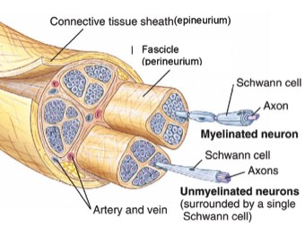
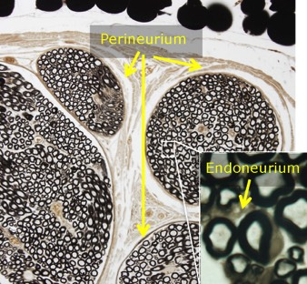

Een zenuw van het perifeer zenuwstelsel (PZS) bestaat uit zenuwbundels die op hun beurt opgebouwd zijn uit zenuwvezels. Zenuwvezels bestaan uit axonen met hier rond cellen van Schwann. Deze kunnen al dan niet een myelineschede vormen.
Bij een perifere zenuw vind je op verschillende niveaus bindweefsel terug. Het endoneurium is een netwerk van fijne (collagene) bindweefselvezels rondom elke individuele zenuwvezel. Een zenuwbundel wordt omgeven door een perineurium. Het epineurium is een laag van dicht collageen bindweefsel die verschillende zenuwbundels samenhoudt en die omwille van de hoge concentratie aan (witte) collageenvezels een zenuw een glanzend wit uitzicht geeft. Omdat je in een zenuw op verschillende plaatsen bindweefsel terugvindt, zullen hier ook bloedvaten voorkomen.


Een zenuw is onderverdeeld in zenuwbundels (fasciculi). In elke bundel vind je verschillende gemyeliniseerde of niet-gemyeliniseerde zenuwvezels terug. Het bindweefsel heeft op elke locatie een specifieke benaming.
Sluit dit venster en ga terug naar het zelfstudiepakket